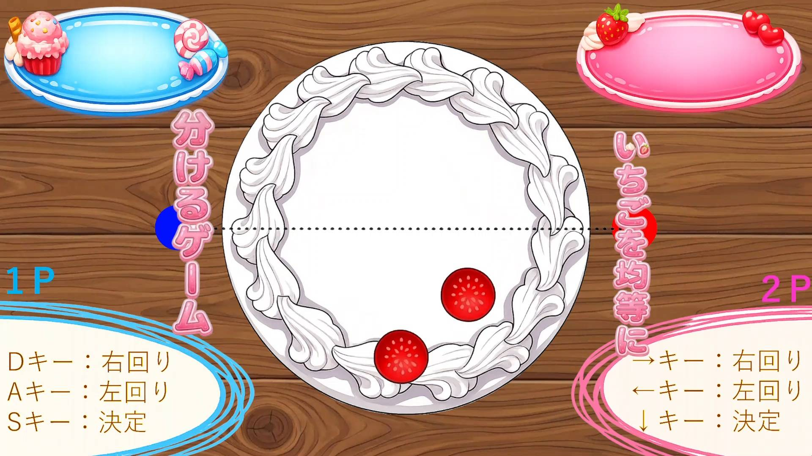

GameJam 2026春作品
二人プレイ協力ゲーム
制作環境：unity、チーム制作（5人）
企業賞受賞

作品詳細
ケーキの上にあるいちごの数が半分になるように赤と青い丸をそれぞれ動かし分断するゲームです。
プレイヤーは2人、一人はASD、もう一人は左右下矢印キーで操作します。
制限時間は30秒。ケーキを多く分ければ表裏一体度が高くなっていきます。
いちごを均等に分けれなかったり、いちごを切ってしまったら大きなタイムロスになるので気を付けましょう。
制作の背景
この作品はGameJamというイベントで「断絶」というテーマで三日間の制作期間でチームで制作をした作品です。
チームは五人、自分はリーダーとしてサウンド兼プログラマーとして参加しました。
リーダーといっても自分はそこまでリーダーらしい業務はした自覚はないのですが、 主にBGM制作、効果音の制作、ゲームの開始からリザルト表示までのプログラムを行いました。
また、メンバーが精いっぱい頑張ってくれたおかげで、企業の方が選ぶ賞、企業賞を受賞することができました。
制作の工夫点
製作期間が三日だけとかなりの短期間だったので、まず、BGMと効果音、その他メンバーのタスク内容をタスクマネージャー にまとめてもらい、初日に出た内容をすべてその日のうちに制作をしました。
また、プログラムでも自分でどのように実装すればいいのかを考える時間もなかったので基本的にAIに書いてもらいつつ それでも自分でバグ修正ができるように最低限コードの意味を理解しながら制作をしました。
制作の苦労した点
サウンドについてはまず、細かい作業や完成させるのは家でしかできなかったので、最低限の用意や下準備はできはしたが それでもそれなりに時間はかかったと思ってます。
そして、効果音に関しては追加で必要になったこともあるのでその都度用意することになったのは少し大変でした。
プログラムに関しては、純粋に作業量があったが一つ一つの実装はそこまで大きな問題はありませんでした。
反省点
今回は作業量が人によって差があったのではないかと思いました。
僕自身はリーダーという役職ではありましたが、前述した通りリーダー業務をした自覚はなく、自分が暇な間他の人は作業をするということがありました。
なので作業量に偏りが起きないようにしていきたいなと感じました。